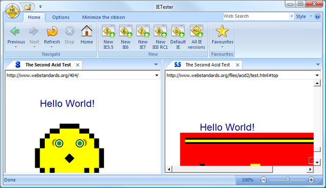

Like everyone else, I need to test my code on Internet Explorer 6 and Internet
Explorer 7. Now Internet Explorer 8 has some great tools for developer, which
I'd like to use. I'd also like to start testing my code with Internet Explorer
8, as it will soon be released.
The question is: how to run Internet Explorer 6, Internet Explorer 7, and
Internet Explorer 8 on the same machine. So far with Internet Explorer 6 and
Internet Explorer 7 I've been using Multiple IE. But people have reported (see
comments on the page linked in the previous sentence) issue with Internet
Explorer 6 after installing Internet Explorer 8. Those errors are related to
focus in form fields. Running Internet Explorer 7 wouldn't matter so much as
Internet Explorer 8 can use the Internet Explorer 7 rendering engine, but we
still need Internet Explorer 6.
How to run Internet Explorer 6, Internet Explorer 7, and Internet Explorer 8
on the same machine?
Answer
I wouldn't do it. Use virtual PCs instead. It might take a little setup, but
you'll thank yourself in the long run. In my experience, you can't really get
them cleanly installed side by side and unless they are standalone installs
you can't really verify that it is 100% true-to-browser rendering.
Update: Looks like one of the better ways to accomplish this (if running
Windows 7) is using Windows XP mode to set up multiple virtual machines:
Testing Multiple Versions of IE on one PC at the IEBlog.
Update 2: (11/2014) There are new solutions since this was last updated.
Microsoft now provides VMs for any environment to test multiple versions of
IE: Modern.IE
Suggest
Nobody mentioned this, but IETester is a great tool. It supports Internet
Explorer 5.5, 6, 7 and 8RC1. The rendering matches the corresponding browsers.
At least I haven't found any discrepancies yet.
I normally use it to do a basic check of the layout. I still need VMs to debug
JavaScript or to use the Developer Toolbar with a specific Internet Explorer
version.
